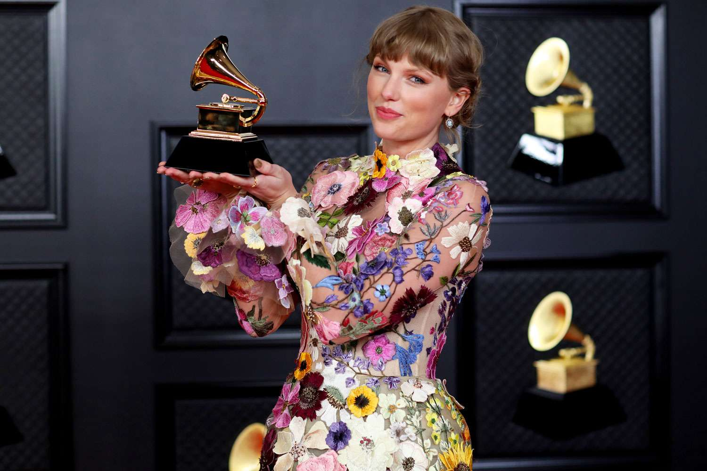

Hey everyone, here I want to tell you my favorite artist, Taylor Swift (can click her name for more info). She is a singer and songwriter. Moreover, he debuted in 2006 and has been in the industry until now. Furthermore, he has produced many hit songs and his songs chart number one on the billboard chart many times and is one of the iconic successful artists in the last decades. Not only that, she has also won many and various awards throughout his career. Hey everyone, here I want to tell you my favorite artist, Taylor Swift. Among the awards she won were the Grammy Award for Album of the Year, the Grammy award for Pop Vocal Album, the Grammy Award for Album of the Year and many mores.
The reason I choose Taylor Swift as my favourite artist is because I really enjoyed her songs and felt related to his songs. This is because, most of the songs in the industry now have empty and meaningless lyrics despite having a nice and well-known beat. However, Taylor Swift is known for her genius lyrics writing. This makes me interested in listening to her song then it can also help improve my english vocabulary. Then, Despite being a famous singer, he did not forget the importance of education. This is because, this year he managed to get an honorary doctorate in fine arts. This shows even the billionaire singer is still continuing his studies Lastly, because She was one of my role models because she started from the bottom and despite a lot of opposition and criticism in the industry, she has survived and risen to become a successful person until now.

My favourite song from Taylor Swift is Cardigan from Folkfore Album. Eventhough, Taylor Swift has produced a lot of great song but i genuinely enjoy this song the most. The meaning of this song is about first love and first heartbreak. That kindly and potent reminder that the agony of losing someone you loved is a heartbreak at any age is where the melancholic beauty can be found. Then, I adore how unvarnished and sincere this song is, sung by an adult about young love and heartbreak. It respects that adolescent love and pain by confirming the seriousness of a first heartbreak from the viewpoint of someone who is older and more experienced than the narrator. The song's use of the past tense is also upbeat. It shows that even if that agony is agonising, it may eventually be put behind us and turn into a bad memory.